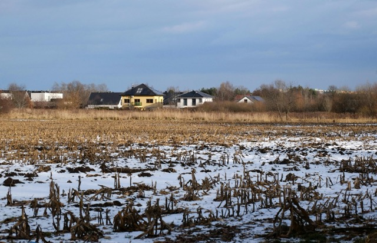
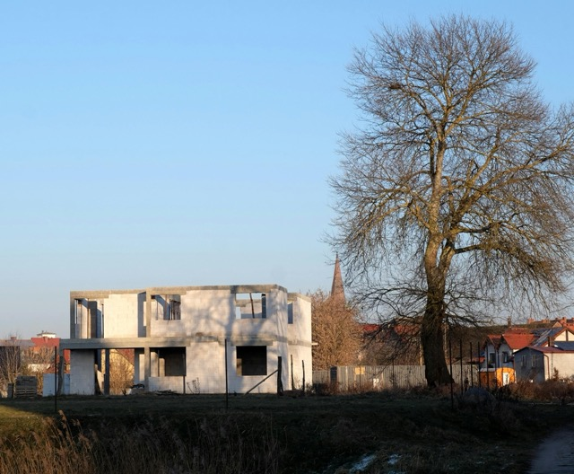

Kiedy odrolnienie działki pod budowę domu jest bezpłatne? Stan prawny i zasady w 2026 roku

Odrolnienie działki, rozumiane jako wyłączenie gruntu z produkcji rolnej, jest etapem formalnym wymaganym w przypadku wykorzystania gruntów rolnych na cele budowlane. Wbrew powszechnym przekonaniom proces ten nie zawsze wiąże się z koniecznością ponoszenia opłat. W określonych sytuacjach przepisy przewidują zwolnienia, które skutkują brakiem należności zarówno jednorazowych, jak i rocznych.
Podstawowym przypadkiem zwolnienia jest wyłączenie gruntu pod budowę domu jednorodzinnego w zakresie do 500 m² powierzchni. Zgodnie z obowiązującymi przepisami, taka powierzchnia może zostać wyłączona z produkcji rolnej bez naliczania opłat.
W sytuacji, gdy inwestycja obejmuje większy obszar, należności ustalane są wyłącznie dla powierzchni przekraczającej ten limit. Oznacza to, że część działki objęta limitem pozostaje wolna od opłat, natomiast pozostała część podlega standardowym zasadom naliczania należności.
Istotne znaczenie ma również klasa bonitacyjna oraz rodzaj gruntu. W przypadku gruntów rolnych niższych klas (IV–VI), szczególnie pochodzenia mineralnego, wyłączenie z produkcji rolnej w wielu przypadkach nie wymaga uzyskania decyzji administracyjnej.
Brak konieczności uzyskania takiej decyzji oznacza jednocześnie brak obowiązku uiszczania opłat z tego tytułu. W praktyce oznacza to, że dla części działek formalny proces odrolnienia nie generuje kosztów, mimo że grunt zmienia swoje przeznaczenie.
Odrębne zasady mogą mieć zastosowanie w przypadku zabudowy zagrodowej, realizowanej w ramach gospodarstwa rolnego. W takich sytuacjach przepisy dopuszczają możliwość wyłączenia gruntów z produkcji rolnej na preferencyjnych zasadach, które w określonych przypadkach również prowadzą do braku opłat.
Zakres zwolnienia obejmuje powierzchnię faktycznie wyłączaną z produkcji rolnej, która może obejmować nie tylko obrys budynku, lecz także inne elementy związane z jego funkcjonowaniem, o ile zostały uwzględnione we wniosku.
Jednocześnie brak opłat nie oznacza braku obowiązków formalnych. W dalszym ciągu wymagane jest uzyskanie zgodności inwestycji z miejscowym planem zagospodarowania przestrzennego lub decyzją o warunkach zabudowy, a także przeprowadzenie procedury administracyjnej związanej z przeznaczeniem gruntu.

W sytuacjach, w których powierzchnia wyłączana z produkcji rolnej przekracza 500 m² lub grunt nie kwalifikuje się do zwolnienia, stosowane są ustawowe stawki należności uzależnione od klasy gleby.
Wysokość tych stawek może być istotna, jednak rzeczywiste obciążenie finansowe zależy od powierzchni objętej wyłączeniem oraz wartości rynkowej gruntu, która pomniejsza należność.
W obowiązującym stanie prawnym w 2026 roku możliwość bezpłatnego odrolnienia występuje w określonych, jasno zdefiniowanych przypadkach, związanych głównie z powierzchnią przeznaczoną pod zabudowę oraz parametrami gruntu.